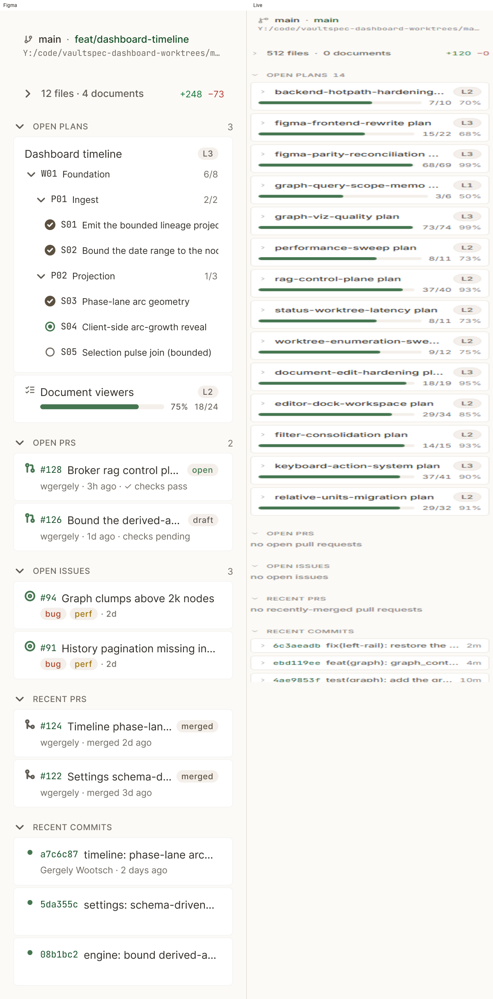
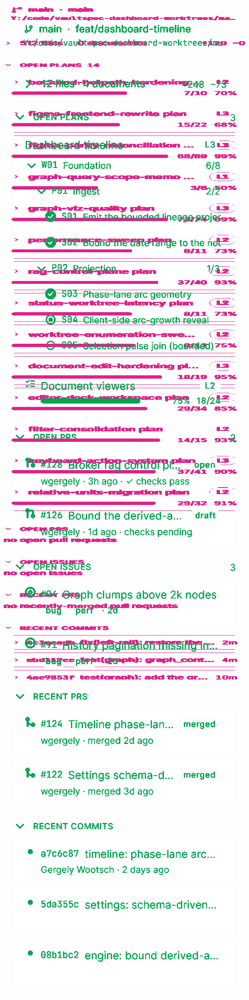

Drag the slider to scrub between Figma reference (under) and Live implementation (over).


Green = content in the design the live build is missing; magenta = content the live build added that the design lacks; faint gray = unchanged.